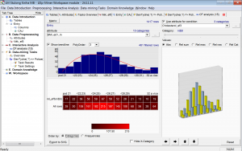
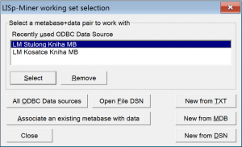
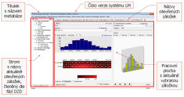

Začínáme
Systém LISp-Miner a proces DZD
Analytické procedury
Pokročilé funkce
Výzkum a vývoj
Začínáme
Systém LISp-Miner a proces DZD
Analytické procedury
Pokročilé funkce
Výzkum a vývoj
Modul LM Workspace je základní modul systému integrující všechny běžné funkce a všechny implementované analytické procedury. Modul nalezneme v základní složce systému LISp-Miner pod názvem LMWorkspace.exe.
Na této stránce jsou obecné informace k modulu. Detailně se jeho jednotlivým funkcím věnují stránky v členění dle fází DZD.
Po spuštění modulu LM Workspace se objeví úvodní dialogové okno pro volbu dvojice data+metabáze, se kterou chceme pracovat. Hlavní část okna zabírá seznam naposledy otevřených analyzovaných dat, ze kterého můžeme tlačítkem Select jedna vybrat a pokračovat v analýze. Při prvním spuštění bude tento seznam prázdný a použít musíme jedno z tlačítek ve spodní části dialogového okna pro načtení dat do systému LISp-Miner.
Po výběru dvojice data+metabáze nebo po úspěšném importu dat z textového souboru se objeví základní obrazovka modulu LM Workspace.
 Základní obrazovka je tvořena nabídkou menu v horní části, stromem s aktuálně otevřenými záložkami nacházejícím se vlevo a její hlavní část zabírá aktuálně otevřená záložka s obsahem podle jejího typu. Aktuálně otevřenou záložku můžeme zavřít klávesovou zkratkou Ctrl+F4, kliknutím na červenou ikonu s křížkem napravo od titulku záložky nebo kliknutím prostředním tlačítkem kamkoliv na titulek.
Šířku stromu otevřených záložek lze měnit, strom lze i úplně skrýt. Zejména na začátku, při seznamování s procesem dobývání znalostí z databází i samotným systém LISp-Miner, doporučujeme strom ponechat zobrazený. Pravým kliknutím na položku stromu otevřených záložek se otevře kontextová nabídka. Je-li skupina A. Data Introduction prázdná, dvojitým kliknutím otevřeme záložku Tables se seznamem databázových tabulek. Je-li skupina D. Data-mining Tasks prázdná, dvojitým kliknutím otevřeme záložku Tasks Overview se seznamem úloh.
Pro rychlou práci s modulem byly vytvořeny klávesové zkratky, jejichž přehled je v tabulce:
| Klávesová zkratka | Význam |
|---|---|
Ctrl+Num1 | Otevření záložky Tables |
Ctrl+Num2 | Přepnutí na záložku Attributes |
Ctrl+Num3 | Otevření záložky Tasks |
Ctrl+Num4 | Otevření záložky Results (aggregated) |
Ctrl+Num7 | Otevření záložky Task Settings pro aktuálně aktivní úlohu |
Ctrl+Num9 | Přepínání mezi záložkami Task Results a Task Settings pro aktuálně aktivní úlohu |
Ctrl+Num0 | Přepínání mezi dvěma naposledy zobrazenými záložkami |
Ctrl+Tab | Postupné procházení záložek v obráceném pořadí, jak byly zobrazeny |
Ctrl+W nebo Ctrl+F4 | Zavření aktuálně otevřené záložky (nelze pro záložku Attributes) |
Ctrl+L | Seznam aktuálně otevřených záložek |
Ctrl+0 | Přepnutí do stromu otevřených oken |
Ctrl+Alt+0 | Zobrazení/schování stromu otevřených oken po levé straně obrazovky |
Dojde-li ke změně v právě otevřené metabázi vlivem činnosti jiného modulu, bude při aktivaci okna původního modulu metabáze automaticky přenačtena. Je-li však stále aktivní původní modul (např. modul LM Workspace při paralelním výpočtu úlohy na pozadí v modulu LM ProcPooler), je třeba metabázi zaktualizovat ručně pomocí klávesové zkratky Ctrl+R.
Ke stisku tlačítek, přepínání mezi záložkami a k otevírání položek menu stačí jedno kliknutí. Pro otevření nové záložky pro položku v seznamu nebo ve stromě otevřených záložek vlevo je třeba dvojité kliknutí. Záložku lze zavřít jednoduchým kliknutím na červený křížek vpravo od jejího názvu nebo jednoduchým kliknutím prostředním tlačítkem (kolečkem) myši kamkoliv na titulek záložky. Ve stromu otevřených záložek vyvoláme kontextové menu pravým tlačítkem myši.
Uživatelská nastavení nalezneme v menu File.
První dialogové okno Font Options se týká nastavení velikosti písma uživatelského rozhraní. Doporučené hodnoty jsou od 90 % do 180 %. Při nastavení příliš velkého písma se záložky a dialogová okna nemusí vejít na obrazovku.
Typ písma nelze v současné době měnit.
V dialogovém okně PCGrid Options se nastavují parametry pro spouštění výpočtu úloha na distribuovaném počítačovém gridu.
Ve dialogovém oknu Geodata Options se nastavují parametry pro zobrazování geografických dat. Blíže viz Práce s geografickými daty.
Zbylá nastavení se realizují v dialogovém okně Miscellaneus Options.
Při práci na operačním systému (resp. databázovém serveru) s nastaveným americkým jazykovým prostředím může být potřeba změnit formát datumů.
Volba jazyka v rámečku Language for auto-created names ovlivňuje jazyk použitý pro názvy automaticky vytvářených kategorií (pro ekvifrekvenční interval intervaly, pro hodnoty odvozené ze sloupce Datum/čas a pro kategorii Others).
Dále je možné určit den, který považujeme za první den týdne (obvykle pondělí, ale např. v USA je to neděle).
Změnit je možné přednastavenou hodnotu maximálního počtu generovaných hypotéz, než dojde k přerušení generování. Nedoporučujeme nastavovat příliš vysoké číslo, protože výpočet může být hodně zpomalován ukládáním velkého množství hypotéz do databáze. Zároveň by velký počet nalezených hypotéz stejně nemohl být v rozumném čase prohlédnut a interpretován.
Počet najednou běžících dílčích výpočtů (např. při použití modulu LMProcPooler) by měl být o něco nižší, než je počet dostupných procesorových jader.
Konečně je možné vypnout zvukové signalizace (zejména dokončení výpočtu úlohy) a automatické zjišťování existence nové verze.

{kind=link}
{kind=link}
{kind=link}